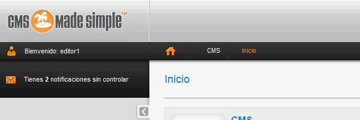

la copia de seguridad de los datos de la aplicación
la carpeta de la aplicación (comprimida en un zip)
Las capturas deben ser capturas de toda la pantalla en formato png en las que se vea la URL de la página y no quepa duda de que se ha realizado en el ordenador del alumno.
1. Descargar la aplicación
Aplicación: CMS Made Simple 1.11.7 (25/05/13). CMS Made Simple es un gestor de contenidos.
Descomprimir CMSMS en la carpeta cmsms. La aplicación se abrirá en el navegador con la dirección cmsms/index.php.
2. Instalar CMS Made Simple
Entrar en phpMyAdmin como usuario root y crear un usuario de MySQL con nombre iwb_cmsms_1, contraseña iwb_cmsms_1 y base de datos iwb_cmsms_1.
Abrir en el navegador la dirección cmsms/index.php.
Modificar php.ini para que en la comprobación de la configuración de la instalación no aparezcan errores. Hacer una captura de la pantalla y guardarla como cmsms_01.png:
En la pantalla de información de cuenta del administrador:
Username: admin
E-mail Address: admin@example.com
Salt Admin Passwords: desmarcar
Password: admin
E-Mail Account Information: desmarcar
En el resto de pantallas:
Nombre del sitio: WebApps
Una vez creado el sitio, elegir el idioma español. Hacer una captura de la pantalla y guardarla como cmsms_02.png:
Hacer una captura de la pantalla de inicio y guardarla como cmsms_03.png:
3. Entrar como administrador
Cerrar el navegador, abrirlo de nuevo y entrar en la pantalla de entrada del administrador. Hacer una captura de la pantalla de inicio y guardarla como cmsms_04.png:
4. Crear páginas y menús
Modificar las páginas para obtener el siguiente resultado. Hacer una captura de la pantalla de inicio y guardarla como cmsms_05.png:
Sólo hace falta cambiar el título contenido de la primera página, el título de la segunda y tercera, ocultar la cuarta y crear una quinta.
Crear dos subpáginas Página 1 y Página 2 dentro de la página Prueba. Hacer una captura de la pantalla de inicio y guardarla como cmsms_06.png:
5. Crear noticias
Ocultar la noticia predeterminada y crear la noticia siguiente. Hacer una captura de la pantalla de inicio y guardarla como cmsms_07.png:
Modificar la plantilla predeterminada para que muestre el título Noticias en vez de News. Hacer una captura de la pantalla de inicio y guardarla como cmsms_08.png:
6. Usuario editor
Crear un usuario editor1 con contraseña editor1, que pertenezca al grupo de usuarios Editor:
Entrar como usuario editor1. Hacer una captura de la página de inicio y guardarla como cmsms_08.png:

Crear una noticia como usuario editor1. Hacer una captura de la página de inicio y guardarla como cmsms_09.png:
7. Copia de seguridad
Entrar en phpMyAdmin como usuario iwb_cmsms_1, elegir la base de datos iwb_cmsms_1 y exportar la tabla con el método rápido al fichero iwb_cmsms_1.sql.